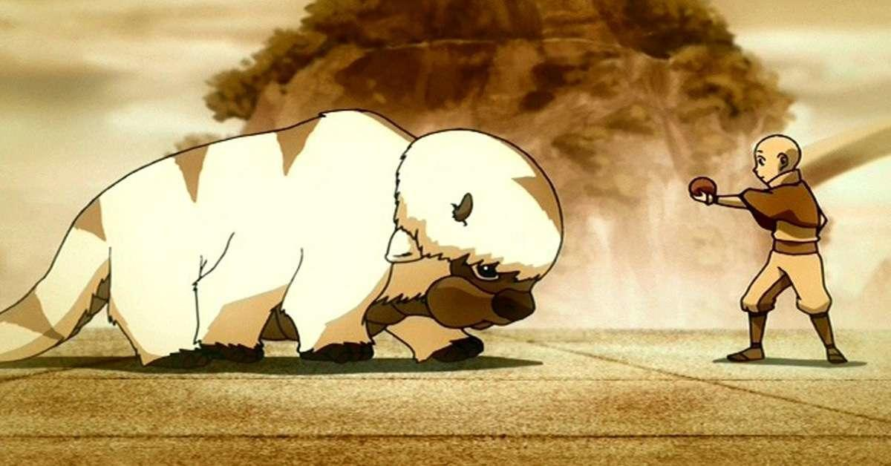
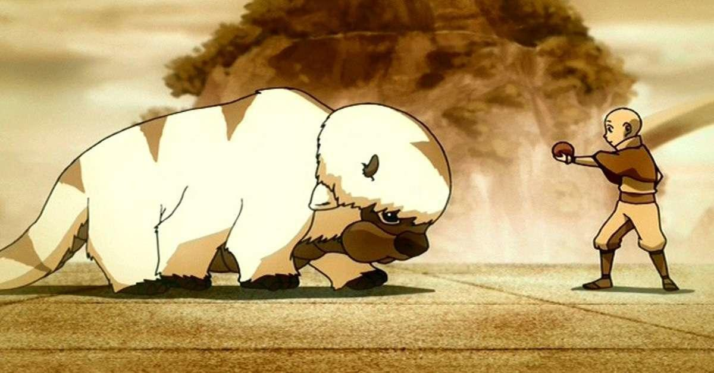

Physical Description
- Hair colour:White,with brown arrow-shaped patch of fur.
- Eye colour:Brown.
His Favourite person, Aang
 Aang,the main protagonist, and Appa first met in the Eastern Air Temple,
when Appa was a mere calf.

Aang,the main protagonist, and Appa first met in the Eastern Air Temple,
when Appa was a mere calf.

They formed an instant bond and have been joint at the hip ever since, fighting many battles together and establishing relationships with notable characters Katara, Sokka, Toph and Zuko.